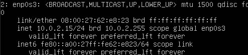
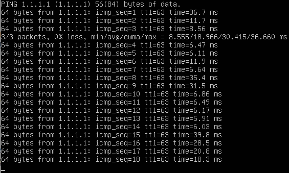

Intro
今天我接手了一個 Linux Server 需要設定 Static IP Address ，所以我稍微研究了一下如何在 CLI 設定，這次環境是基於 VMWare 的 VMRC 設定整套環境，因此預設是沒有辦法提供網路安裝任何 network tools。
Let’s get started!
設定配置 Configuration
環境 Environment
環境採用 Ubuntu 20.04 LTS Server，因此沒有 GUI ，提供服務的單位已經事先分配 Static IP 給使用者，所以我們只要透過 netplan 這個工具就可以設定好 Static IP。
這次我介紹透過模擬的環境來介紹以及說明如何開始設定。
配置文件 Config file
我們可以透過 ls /etc/netplan 看到裡面有一個 00-installer-config.yaml
裡面的內容預設為環境的配置，我這邊是這樣的
1 | # This is the network config written by 'subiquity' |
但是我希望改成 Static IP，所以我會改成這樣
1 | network: |
套用設定 Apply configuration
我們設定完成以後可以跑 sudo netplan –debug apply， 這樣就可以 apply 剛剛設定好的 Static IP，那 –debug 的目的是可以順便檢查設定的結果。
接著可以用 ip a 檢查配置是否正確
如下圖

這樣執行 ping 1.1.1.1 就會得到這樣的結果

我就提供指令執行順序:
sudo vim /etc/netplan/00-installer-config.yamlsudo netplan --debug applyip aping 1.1.1.1
以上
結語
我想都沒想到，我一整個下午都在設定這個 Static IP，只是因為我不小心把 *.*.*.*.254 的 Gateway 設成 *.*.*.255。
當我試著 ping gateway 的時候， gateway 就回應了，才發現自己的愚昧是打錯字。
設定 Static IP 其實很簡單，只要上游的 Router/Switch 提供好設定，剩下只要簡單的指令就可以完成了。